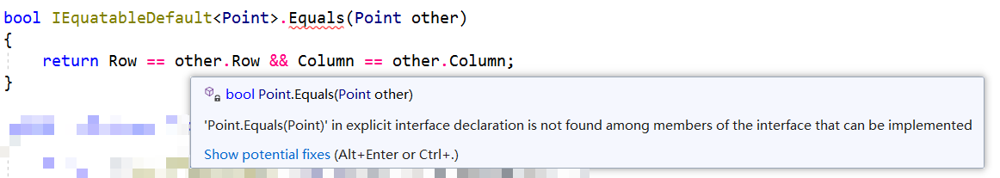

C# 8 里的默认接口实现
接口基础知识
接口是一种面向对象编程 OOP 的语法机制，它和抽象类不同的地方在于，它需要你完全实现接口里给出的全部方法集合。
比如如下给定一个坐标对对象 Point，实现代码全部给出：
1 | public readonly struct Point |
当然，这些写法比较新，用的是 C# 6 提供的更多成员的 Lambda 实现模式以及 C# 7 给的元组模式来对位赋值，以及值元组类型 ValueTuple<...>。
显然，这个 API 太过于简单，我们还没有实现更多的东西。由于坐标对对象明显可以比较相等（只要行列的数值都相同，就可以认为坐标对对象是一样的），但我们为了后续可以告诉其它程序员，这个 API 可以提供比较和字典比较这些操作，我们需要实现 IEquatable<T> 接口来保证对象可以使用比较判断。
接着，设置好所有的重写方法和操作符重载：
1 | public readonly struct Point : IEquatable<Point> |
先大致不用去看具体实现，因为我们这里的侧重点不是实现，而是接口。
当然，如果你不希望对方调用这个 Equals 方法的话，请把实现的方法改为显式实现。
1 | bool IEquatable<Point>.Equals(Point other) |
使用 接口名.方法名 来表示实现的接口，并且返回值前强制不加 public，因为接口里的方法在实现起来必然是 public 的，完全不必写出来。
什么是默认接口实现？
当我们需要的接口具有通用性，但又不是非要实现的话，我们就可以使用默认实现，类似于类里的虚方法。比如，我们完全可以使用给定的 GetHashCode 方法来判断对象是否数值上相等，于是我们就可以写一个接口，又不必实现，只需要这么写：
1 | public interface IEquatableDefault<in T> |
这样的话，我们就不必再每次都实现接口的方法了。把原来的 API 修改一下即可：
1 | public readonly struct Point : IEquatableDefault<Point> |
但请注意，接口默认的实现规则使得必须先把调用对象转为对应接口对象，然后才能调用。这是因为对象使用的默认方法实现，而实现机制要求你需要转换回接口，才能使用该方法，类似于显式实现的接口。
重新实现接口
类重新实现基接口的成员
在前文给出的实现机制下，我们显然发现，这个 GetHashCode 写起来有点不太对，因为它直接异或运算得到的结果来比较，这一点不是很好。所以我们尝试去把原本接口里实现的方式进行修改。
我们尝试在 Point 里加入显式接口实现：
1 | bool IEquatableDefault<Point>.Equals(Point other) |
这一点和虚方法的重写不同，它不需要添加 override 关键字，因为它是属于接口层面的实现（之前的接口实现从来就没有写过 override 关键字，所以此时这里也是一样）。
然后，它就替换掉原本接口里的默认实现了。也就是说，如果我们尝试调用原本 API 的 Equals 方法，由于它调用的是接口的 Equals 方法的实现，而此时已经被重写，所以调用的实际上是上面这个重写后的显式接口实现的方法。
那么，原本接口内的方法就变成了类似于虚方法的机制了，当然，这只是”类似于“。
接口重新实现基接口的成员
下面来看另外一种情况。
1 | public interface IEquatableDefault<T> : IEquatable<T> |
这样的实现模式就可以把基类的 Equals 方法实现掉。不过这样的实现模式就不允许在类里重写方法了。因为显式接口实现是不允许重写的，否则将会产生如下的报错：

1 | CS0539: |
从报错的编码就可以看出，实际上它并不是一种新的错误类型，而是之前的错误类型：不允许重写显式实现的方法。当你显式实现了一个接口里并不含有的方法时，就会产生这个错误，例如：
2
3
4
5
6
7
8
9
10
11
{
void M();
}
public class Clx : I
{
void I.X() // CS0539
{
}
}这样便会产生 CS0539 错误。而从上面的文章示例可以看出，由于你显式实现的原接口
IEquatable<T>的方法，所以类里就无法进行重写，因为这个显式实现并非IEquatableDefault<T>类里的元素（或者说，这个显式实现具有良好的封装性）。
使用其它访问修饰符成员的支持
当然，这一次默认接口实现的特性还添加了对其它访问修饰符成员的支持。你可以在接口里自行声明 private、private protected、protected、protected internal、internal 或 public 的默认接口成员的实现。不过，用法和前文介绍的默认接口实现的机制基本上一样，除了一点，就是访问修饰符的级别而已。
静态成员的支持
除此之外，默认接口实现还支持静态成员。举个例子。类似于上文的 Point 对象，我们完全可以默认实现一个 Parse 执行的静态方法。
比方说，我们可以写一个模块，专门用于实现 Point 类型用字符串转换的解析操作，我们可以这么设计接口的 API。
1 | public interface IPointParsable |
不过调用的时候就只能这么书写了：
1 | var pt = IPointParsable.Parse("(3, 5)"); |
即使用 接口名.静态方法名 来调用。这一点确实有点让人不爽，还不如把方法直接写进结构里，哪怕在前期使用单独的静态类加静态方法，也可以使用 静态类名.静态方法名 依然可以解决，所以这个功能目前来说还不是很有用处。
* 实现和重抽象化成员
在官方给出的提案里，是提到了重写基默认接口成员的方法（Override）和重抽象（Re-abstraction）的内容，不过在目前的 C# 8 里全部尚不可以使用。所以这个坑就只能等到语法层面更新的时候才能继续往下写了。现在先给出一点概念。
重写
重写基接口成员的方法，官方给出的方案是通过 override 的方式提供显式和隐式实现。
1 | interface IA |
比如上述示例里，IA 接口里有一个实现，在派生接口里，都得到了重写实现，它们都加上了 override 关键字，即使是显式实现的。
不过从前文可以得知，目前想要实现基接口里的成员，必须使用显式接口实现，隐式目前还不支持。
重抽象
你甚至支持在派生接口里重新把原本实现的操作再次抽象掉，这样在继续派生的话，就必须给出实现。
1 | interface IA |
不过，目前的重抽象是否被允许，还是一个遗留问题（Open issue），甚至
IB接口里的显式实现到底应该写作abstract override还是abstract现在还没有给出结论。
菱形结构
当允许了上述的逻辑时，就必然会产生菱形结构：即某个类型继承自两个不同的接口，但两个不同的接口又同时实现了同一个接口的行为，且实现方式不同。
那么此时，这个所谓的“某个类型”到底是取哪一个接口的实现行为才应该是合理的呢？
1 | public interface IA |
实际上，Class 里会报错，报错信息是这样的：
1 | CS8705: |
提示信息的意思是，你现在使用的 Class 类实现了两个相似的接口 IB 和 IC，而它们全部显式实现了 IA 接口里的 Method 方法。但问题在于，它们都是显式接口实现，这都不是“真正实现”的方法。这样确实也防止了菱形结构的模棱两可的情况。
该不该加 virtual 关键字？
前文用到的实现哪怕加入了 override 关键字来表达重写，但依旧不知道是否需要添加 virtual 关键字支持。从目前来说，在 IDE 里你完全可以添加 virtual 关键字，但实际上这个关键字加了当没加。因为加不加，都可以允许你显式实现接口成员，因此没有区别。但以后就不一定了，因为可能会出现 override 的情况，这样就可能出现前文提到了隐式实现模式和重抽象，这一点就完全可能会出现和体现 virtual 的功能了。
指定基接口调用和实现
在重写和重抽象的时候，我们可以使用 base 关键字指明你调用的是哪个基接口的对象的成员，不过目前也不支持，貌似等到 C# 9 才会出现了。目前有两种调用机制：base(接口名).成员名 和 base<接口名>.成员名。